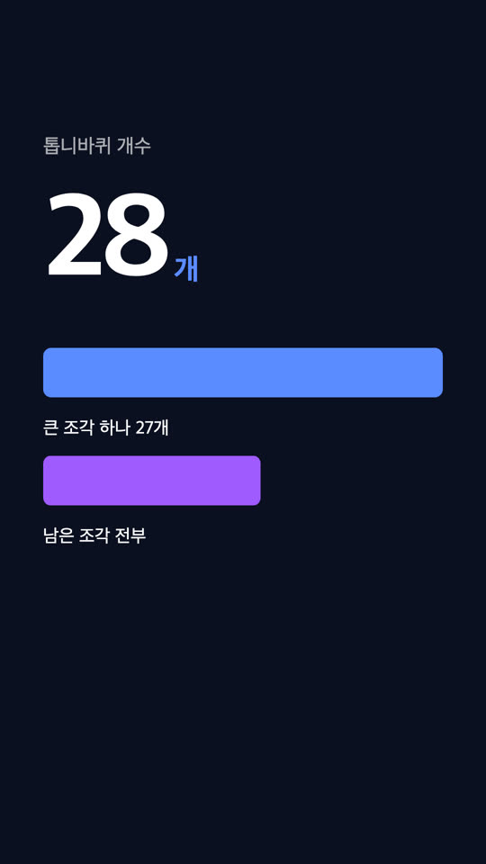

바꿀 만하다. 다만 "애니메이션이라서" 좋아지는 게 아니라 움직임이 뜻을 담을 때만 좋아진다. 데이터 클립에 애니메이션을 넣으면 참여와 주의는 유의하게 오르고 이해도는 해가 없다는 게 1차 연구 여러 편의 공통 결과다. 반대로 뜻 없는 장식 모션은 참여도 못 올리면서 이해를 깎는다.
기술적으로는 지금 막혀 있는 이유가 본질적 제약이 아니다. 슬라이드 레인이 CSS 애니메이션을 금지하는 건 캡처 스크립트가 "정지 화면을 연속으로 찍어 바이트가 같아지는 지점"으로 상태 수를 세기 때문이다. 크롬을 한 번 띄워 놓고 프레임마다 애니메이션을 원하는 시각으로 끌어다 놓고 찍는 방식으로 바꾸면 그 이유가 사라진다. 함께 실은 데모의 슬라이더가 정확히 그 방식이다 — 시계가 아니라 currentTime 대입으로 프레임을 고른다.
이 레인은 이미 한 번 계약 밖에서 만들어졌다. ep05(안티키테라)에서 「원리 5·6·7컷을 톱니가 실제로 도는 애니메이션으로」 지시가 나왔고 이전 세션은 HTML 슬라이드를 빌드 경로에서 빼고 Python/PIL 로 330프레임씩 직접 그려 mp4 로 구웠다(700줄). 수요는 확인됐고 남은 건 그걸 일회성 스크립트가 아니라 레인으로 만드는 일이다.
@keyframes, delay 1.2s·2.4s) + 라벨 페이드. 슬라이더가 document.getAnimations() 전부를 pause() 하고 currentTime 을 대입한다.구조상 그렇게 된다. points 씬의 기본 화면 몸체가 still(생성 이미지 + Ken Burns + 캡션 리빌)이고 생성 영상은 회차당 2컷 상한이라 나머지는 전부 정지다. HTML 슬라이드 레인은 있지만 롱폼 16:9 전용이고 움직임은 리빌 상태 사이 xfade 뿐이다.
최근 회차 실측이 그대로 보여 준다 — pundago ep07(김치) 11컷 중 10컷 정지, ep01 7/7, 딸깍랩 iphone-fold 편 14컷 중 13컷. 채널 첫 네 편의 유지율(52→38→26→19%)이 조회수 순서와 일치했고 이긴 곡선은 90초 내내 수평, 진 곡선은 3초부터 흘러내렸다. 둘 다 오프닝은 통했다. 승부가 난 자리는 본론이고 본론이 바로 정지 씬이 몰리는 구간이다.
양쪽이 만나는 지점. ① 움직임은 값이 자라거나 항목이 늘어나는 것처럼 뜻이 있을 때만. ② 한 단계에 한 변화, 단계 사이에 멈춤. ③ 화면 글자는 나레이션 받아쓰기가 아니라 핵심 숫자·단어 몇 개를 그래픽 옆에. ④ 클립 하나에 인사이트 하나, 15초 안, 끝 프레임에 결론 고정.
이 넷은 지금 스키마의 「화면 텍스트는 소리를 복제하지 않는다」·「한 문장 = 한 자막 = 한 리빌」과 같은 방향이다. 주의 — 위 연구는 전부 나레이션 없는 재료다. 나레이션 위에 빌드를 얹는 조합이나 정지+Ken Burns 대 HTML 빌드를 직접 비교한 연구는 없다.
TTS 경계 시각을 이미 가진 파이프라인에 그대로 옮겨지는 규칙부터.
reveal-timing.py 가 내는 문장 경계가 이 타임라인의 입력안티패턴 — 한 화면에 움직이는 것 여럿, 파티클·색종이, 거리·크기 무시한 균일 지속시간, 30초 넘게 한 가지 모션 아이디어, 자막이 오디오보다 먼저·늦게 뜸, 심미성이 기능을 앞섬.
한국 자료에서 확인된 것 — 쇼츠 편집자 @mooyoung_tube: 한 번에 보이는 글자를 줄이고 4줄 이상 금지, 훅은 두꺼운 폰트·본문은 얇게, "오디오가 시작될 때 자막이 나오는 게 이상적". 14F 제작진: "내용 이해를 돕는 모션그래픽을 많이 활용"(수치 없음). 뉴스 CG 논문: 그래프·도표형이 최빈, 원칙은 "간단명료". 슈카월드·삼프로 편집 분석이나 예능 강조 자막의 펀치줌 지속시간 같은 수치 자료는 못 찾았다.
통설에 그친 것 — "N초마다 화면 변화"(2초·5~7초·10~15초 전부 데이터셋 없음), "애니메이션 자막 시청시간 +25~40%"(출처 없는 A/B), 키네틱 타이포 "(글자수÷12)+0.5초" 공식(원문 없음).
지금 막힌 자리. capture-reveals.sh 가 ?reveal=k 를 올려 가며 정지 화면을 찍고 직전 캡처와 바이트가 같아지는 k 를 상태 수로 삼는다. 움직이는 요소가 하나라도 있으면 이 판정이 끝나지 않으니 check-slide.js 가 CSS animation/transition·웹폰트·Date·Math.random 을 통째로 막는다. 금지는 "결정성"이 아니라 "상태 세기"를 지키려는 것이다.
결정성의 모양을 바꾸면 된다 — "정지 상태가 바이트 동일"에서 "시각 t 의 프레임이 재현 가능"으로. 프레임 수는 TTS 경계와 씬 길이에서 나오니 세어 볼 필요가 없다.
| 경로 | 판정 | 이유 |
|---|---|---|
| WAAPI seek 루프(직접 구현) | 채택 | document.getAnimations() 가 CSS Animations·Transitions·WAAPI 를 다 돌려주고 pause() 뒤 currentTime = t 로 임의 시각에 세운다. 브라우저 표준, 라이선스 없음, 기존 스크립트에 루프 하나 |
| HyperFrames(HeyGen, Apache-2.0, 0.8.17) | 2안 | 같은 seek 모델을 패키징. Node 22+·자체 CLI·data-* 계약 이식 필요. 맥에선 어차피 screenshot 모드 폴백 |
| Remotion | 비추 | 카드 전부 React 재작성, useCurrentFrame() 밖 애니메이션은 깨짐. 관여 인원 4명부터 유료 |
| Motion Canvas | 불가 | 헤드리스 렌더 없음(#415 open), 2025-02 이후 배포 없음 |
| timecut / timesnap / timeweb | 불가 | CSS 애니메이션 "will likely not render as intended", 2022~23 이후 방치 |
Playwright page.clock | 부족 | JS 타이머만 가상화, document.timeline 은 못 움직임(#38951) |
| CDP virtual time / BeginFrameControl | 맥 불가 | enableBeginFrameControl 문서 "not supported on MacOS yet" |
카운트업(JS) + 막대 3개(CSS @keyframes, animation-delay 1.2s·2.4s) + 라벨 페이드 3개를 담은 1080×1920 카드를 30fps 로 90프레임 캡처했다.
diff -rq 무차이)animation-delay 까지 seek 로 정확히 잡힌다ffmpeg -framerate 30 -i f%04d.png → 1080×1920·30fps·90프레임·3.000초 mp4. 빌더 xfade 체인 규격(같은 해상도·fps·CFR)에 그대로 맞는다capture-frames.sh 방식(프레임마다 크롬 기동) 프레임당 2.12초. 15초 씬 450프레임이면 16분 대 20초
핵심 코드는 이게 전부다.
// card.html 이 노출하는 seek — 모든 움직임은 이 한 함수로 시각 t 에 선다
window.__seek = tMs => {
for (const a of document.getAnimations()) { a.pause(); a.currentTime = tMs; }
// JS 구동 요소(카운트업)는 t 로 값을 계산해 그린다 — Date·rAF 를 읽지 않는다
};
// render-slide.mjs — 크롬 한 번, 프레임마다 seek + screenshot
const page = await browser.newPage();
await page.setViewport({ width: 1080, height: 1920, deviceScaleFactor: 1 });
await page.goto(url); await page.evaluate(() => document.fonts.ready);
for (let i = 0; i < frames; i++) {
await page.evaluate(t => window.__seek(t), i * 1000 / 30);
await page.screenshot({ path: `f${String(i).padStart(4, '0')}.png` });
}문서로 확인한 함정 — document.fonts.ready 는 아직 글자에 안 쓰인 폰트를 안 기다리니 DOM 을 다 올린 뒤 기다리고 폰트는 로컬 파일로 · CSS transition 은 속성이 바뀐 뒤에만 CSSTransition 객체가 생기니 @keyframes 를 쓴다 · Animation.pause() 는 pending 을 거칠 수 있어 await Promise.all(anims.map(a => a.ready)) 를 한 번 끼운다 · Playwright 라면 screenshot animations:'disabled' 가 seek 상태를 부수니 기본값 'allow' 로 · image2 기본이 25fps 라 -framerate 30 을 -i 앞에 · GSAP 는 3.13(2025-04)부터 플러그인 포함 무료라 타임라인 seek() 로 같은 루프에 들어간다.
존 좌표만 formats.js portrait 값(x 176·top 190·bottom 570)으로 바꾸면 된다. 리빌 상태를 A|B 로 잘게 나눠 xfade 만으로 "한 단계 한 변화"를 만들고 히어로 숫자는 제목보다 크게. 한계는 분명하다 — 카운트업·막대 성장·도는 톱니는 못 한다. ep05 가 우회한 게 정확히 이 한계다.
visual.slide 에 motion: true 같은 표지를 두고 그 씬만 새 경로를 탄다.window.__seek(t) 로 재현된다" 하나. Date·Math.random·requestAnimationFrame 읽기 금지는 유지하고 CSS @keyframes 와 로컬 @font-face 는 허용. check-slide.js 의 결정성 규칙을 이 모양으로 바꾼다.title·bullets·slide.labels)에서 온다 — 문체 게이트(screen 표면) 우회 금지는 그대로.reveal-timing.py 가 내는 문장 경계. 렌더러가 window.__keyframes 로 주입하고 슬라이드는 그 시각에 요소를 발화시킨다. 나레이션 동기가 그대로 산다.zoom=none 레인)로 들어가니 오디오 무드리프트 계약은 건드리지 않는다.씬 유형이 늘어 렌더러 유지가 부담되면 같은 seek 모델을 패키징한 HyperFrames(Apache-2.0)로 옮긴다. Remotion 은 React 재작성과 인원 기준 유료 라이선스 때문에 이 파이프라인엔 맞지 않는다.
bench/card.html·bench/bench.mjs — npm i puppeteer-core 뒤 node bench.mjs 90 frames 로 같은 실측을 다시 낼 수 있다(시스템 크롬 경로는 파일 안에). 조사는 근거·기술·실무 세 갈래를 각각 따로 검색해 합쳤고 출처는 본문 링크가 전부다.